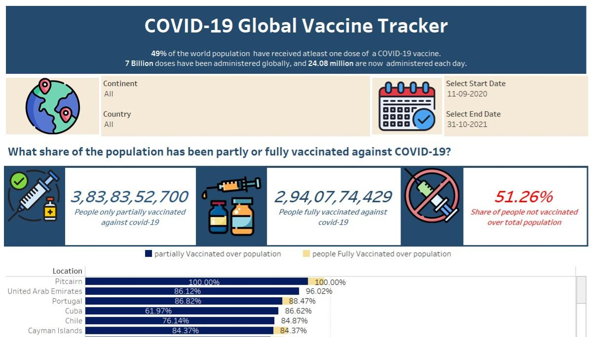
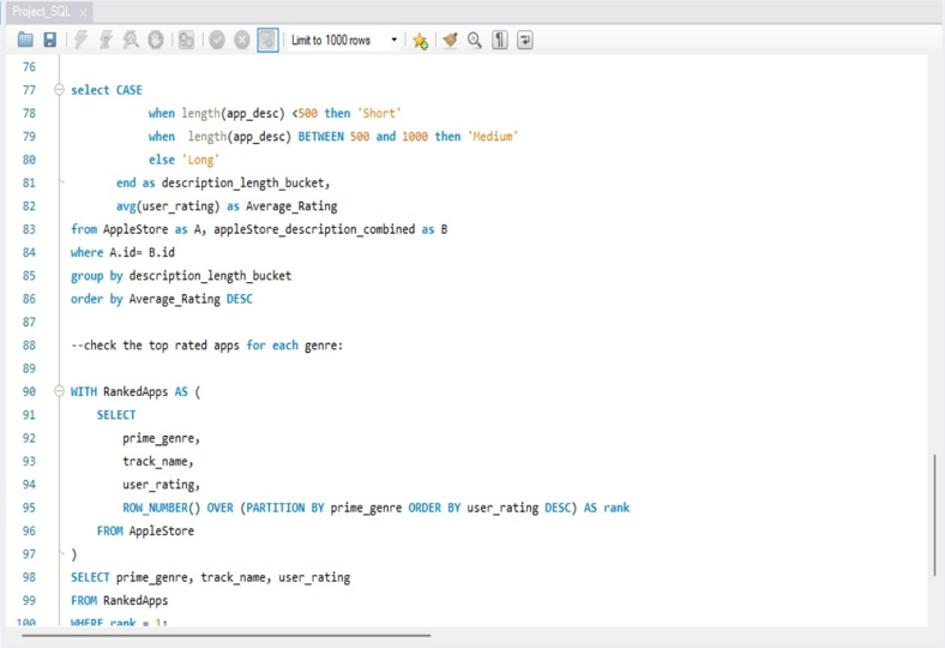
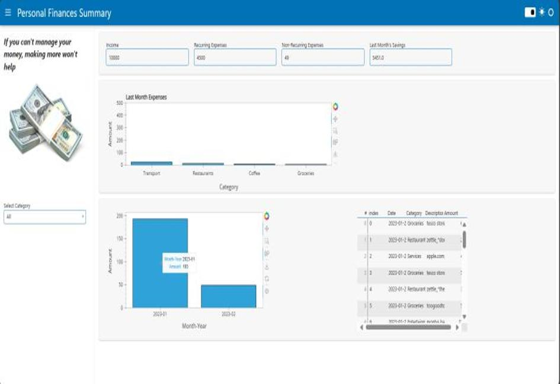
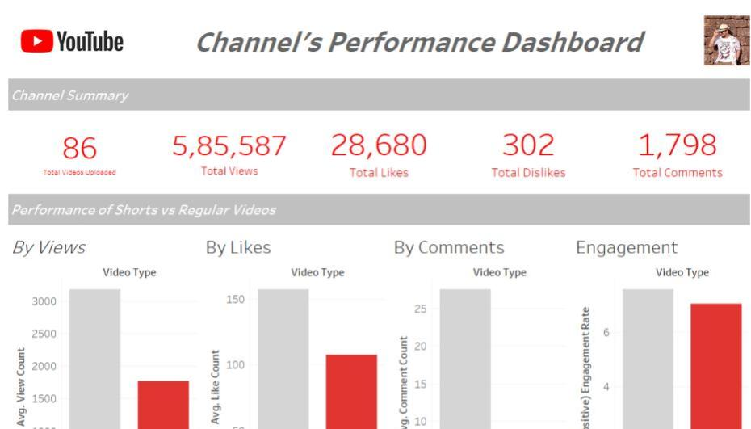

December 23, 2024
Explore how data visualization transforms complex datasets into actionable insights with the COVID-19 Global Vaccine Tracker Dashboard.
This project leverages data from Kaggle to showcase global vaccination trends, regional disparities, and the relationship between GDP per capita and vaccination rates.
Key features of the dashboard include:
- Interactive Visualizations: A global map, bar charts, and scatter plots for in-depth analysis.
- Dynamic Filters: Customize views by region, country, or time period.
- Actionable Insights: Identify underperforming regions, track vaccination progress, and explore economic impacts.
With this dashboard, administration bodies can uncover hidden patterns, prioritize resources, and strategize for equitable vaccine distribution. Built using Tableau with a robust ETL process in Python and Excel, this project demonstrates the power of data to drive impactful decisions.


This project leverages data analytics to extract actionable insights from sales data, helping businesses make informed decisions. Key highlights include analyzing sales trends, customer behavior, and visualizing performance metrics. Using tools like Power BI, MySQL, Excel, and Python , the project delivers reports and models to optimize strategies and improve revenue.

The Applestore Insights SQL project uses SQL to analyze Apple Store data, focusing on customer behavior, sales trends, and inventory. It identifies top-selling products, regional sales, and purchase patterns using techniques like CASE, JOINs, and GROUP BY to generate actionable insights, including revenue trends and growth opportunities.

The Personal Finance Dashboard is a Python-based tool for analyzing and visualizing financial transactions. It categorizes spending into groups like Groceries, Travel, and Restaurants. Built with Panel and hvPlot, it features interactive charts and real-time savings calculations to provide actionable insights, including monthly expenses, category-wise breakdowns, and financial health analysis.

The YouTube Channel Insights project leverages data analysis to evaluate key performance metrics, such as video views, engagement rates, and subscriber growth. Using Tableau and the YouTube Data API, it provides actionable insights to optimize content strategy, enhance audience engagement, and track growth trends through visualizations like engagement distribution, subscriber growth charts, and audience retention analysis.